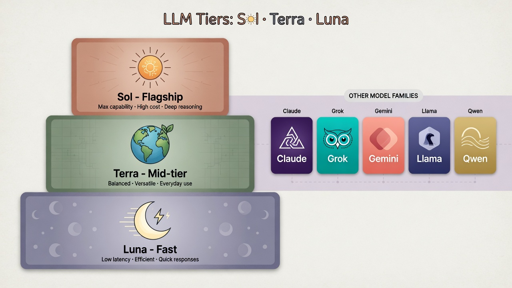

A. 「能力边界」是什么
金字塔 · 先结论 → 再要点 → 再专业
大模型很强，但不是全知员工——边界就是「它稳定做对」与「你必须接管」之间的那条线。
- 是什么：在特定任务、数据与安全约束下，模型做对的概率范围；超出不是再问一遍就能稳。
- 和你有关：决定能不能直接交客户、用 Sol 还是 Luna、要不要搜索/人审。
- 怎么判断：公开榜单粗筛 + 厂商说明 + 你自己的业务样例（最重要）。
展开专业表述
能力边界（capability boundary）可理解为：模型在给定任务分布、提示/工具配置与对齐策略下的可靠工作域。域外失败模式包括幻觉、过期知识、工具误调用、越权尝试等，需用 RAG、工具校验、评测集与人在回路补齐——详见本站 评测与护栏。
极强但会自信说错的顾问：方案写得好，药方/判决/股价不能盲信。边界 = 你必须自己负责验收的那条线。
B. 八个边界维度（结构清单）
读任何「最强模型」新闻时，用这张表对照，避免被单一分数带跑。
（首页已用独立示意图讲「别全信」；本页不重复配图，直接看维度清单与榜单。）
C. 主流大模型族（国内外）怎么放进地图
不背参数量。按「谁出品 · 适合什么 · 边界提醒 · 官方入口」读。
| 家族 / 代表 | 常见定位 | 能力边界提醒（通识） | 官方入口 |
|---|---|---|---|
| OpenAI GPT‑5.6 Sol / Terra / Luna |
旗舰三档：最强 / 均衡 / 快省 | 仍有知识截止；Agent 任务需工具与人审；档位选错会贵或不够用 | OpenAI 预览说明 |
| Anthropic Claude （Opus / Sonnet 等档位随版本变） |
长文、编程、谨慎对齐风格突出 | 安全策略更严时可能多拒答；事实仍需核验 | anthropic.com/claude |
| Google Gemini | 多模态与搜索生态结合 | 版本线多，注意产品名≠同一能力；专用场景仍要评测 | Gemini 模型页 |
| DeepSeek | 高性价比推理/代码路线常被关注 | 开源/API 版本能力不同；合规与部署环境要自评估 | deepseek.com |
| 通义 Qwen 等阿里系 | 中文场景与开源权重活跃 | 开源型号众多，选对尺寸与是否 Instruct | GitHub Qwen |
| 文心 / 豆包 / 混元 / 智谱 等 | 国内产品与 API 生态 | 能力随版本快变；以官方文档与你的业务集为准 | 各厂商控制台 / 开放平台（以官网为准） |
| 开源通用 Llama、Mistral 等 |
可私有化部署 | 推理成本转成你的 GPU；安全对齐需自己做 | Hugging Face Models |
结构意识
「最强」通常只在某个榜、某个任务上成立。生产选型顺序建议： 任务类型 → 数据是否出境 → 延迟成本 → 榜单粗筛 → 自有样例精测。
D. 专题：GPT‑5.6 的 Sol · Terra · Luna
同一代三个档：Sol 最强、Terra 日常、Luna 又快又省——选档比死磕「最新」更重要。
- 数字（5.6）= 世代；名字（Sol/Terra/Luna）= 能力与成本档位。
- 难题/高质量 → Sol；默认干活 → Terra；海量轻任务 → Luna。
- 三档都仍有知识截止与幻觉边界，不是物理世界自动免检。
展开：分档细节与对照其他厂商
OpenAI 将分档设计为可独立演进的 tier。其他厂商亦有旗舰/均衡/轻量命名（如 Claude 的 Opus/Sonnet 等，以官网当前产品线为准）。生产环境建议做「任务路由」：按难度与成本自动选档，并用自有样例回归，而不是全局锁定最贵模型。

☀ Sol
定位：家族内最强档，适合复杂推理、难编程、高质量长任务。
边界：更贵；仍有截止与幻觉风险；不是物理世界自动执行保证。
🌍 Terra
定位：均衡档，日常主力常见选择，性价比取向。
边界：极端难题可能弱于 Sol；需用任务分流。
🌙 Luna
定位：更快、更省，适合高频简单任务、分类、草稿、低延迟接口。
边界：能力上限最低；别拿它扛关键决策与硬核推理。
和你怎么用
默认 Terra 或中档；卡住再升 Sol；批量轻任务用 Luna。API 路由比「全程旗舰」更专业。
官方对 Sol/Terra/Luna 分档、上下文与知识截止等说明的入口页（以页面最新内容为准）。
https://openai.com/index/previewing-gpt-5-6-sol/其他厂商也有类似「旗舰 / 均衡 / 轻量」分档（名称不同）。学会分档思维，比记住某一个花名更重要。
E. 权威排行榜与评测（可跳转）
榜单是「粗筛工具」，不是真理。建议至少交叉看： 人类偏好对战 + 代码/Agent 专项 + 开放权重榜。
社区盲测对战 + Elo。看「真实聊天体感」的常用参考。原 LMSYS Arena 脉络，现以 lmarena.ai 为主入口。
https://lmarena.ai/?leaderboard综合质量、速度、价格等维度的独立比较站，适合选型时看性价比。
https://artificialanalysis.ai/leaderboards/models持续更新的代码评测，减轻「刷题泄露」问题。
https://livecodebench.github.io/开放权重模型基准排行，看可本地/私有化部署的选项。
Open LLM Leaderboard学术向整体评估框架，强调多场景、透明方法论。
https://crfm.stanford.edu/helm/Chatbot Arena 相关开源栈与研究基础设施的重要仓库。
https://github.com/lm-sys/FastChat读榜防坑
- 榜一会变：版本、采样、是否「thinking/扩展推理」标签要看清。
- 聊天 Elo 高 ≠ 你的领域文档问答高。
- 开源榜高 ≠ 商用 API 同款行为（对齐与系统提示不同）。
- 最终以你的 20–50 条真实题回归测试为准。
F. 和你有什么关系 · 你可以怎么用
用中档模型日常学；难题换旗舰；对事实类答案要求来源或自己检索核对。
对外材料、合同要点、数据结论：AI 出草稿 + 人终审。禁止「盲信旗舰」。
做模型路由与护栏：简单→便宜快；难→旗舰；敏感→人在回路。接 RAG/工具补截止与幻觉。
推荐决策顺序
- 任务属于哪类？（写文 / 代码 / 检索问答 / 多步 Agent / 多模态）
- 失败代价？（低→可自动；高→必须人审）
- 是否需要最新信息？（要→联网或 RAG）
- 用榜单缩小到 2–3 个候选
- 用自有样例 + 成本延迟复测
- 上线后持续抽检（Eval）
G. 延伸阅读：论文 · 开源 · 官方
Transformer 基础，理解现代 LLM 能力从何而来。
https://arxiv.org/abs/1706.03762社区对战评测方法与数据开放（见 LMSYS / Arena 生态）。
https://github.com/lm-sys/FastChat排行与模型名更新极快：本页给出入口链接与读法；具体名次请以你打开当天的榜单页面为准。